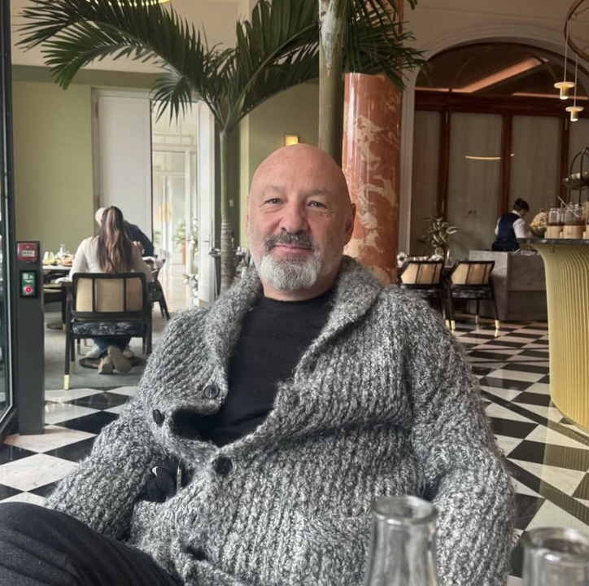
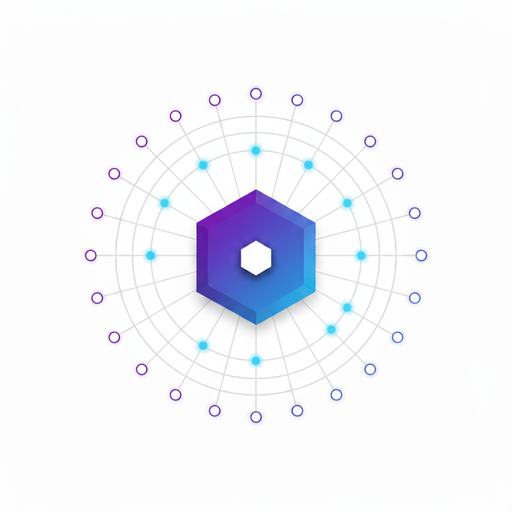
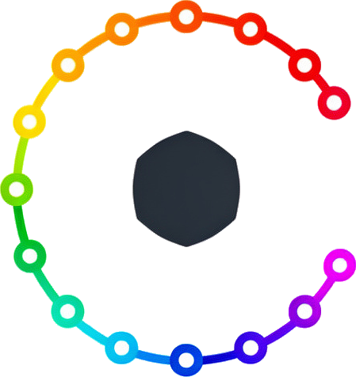
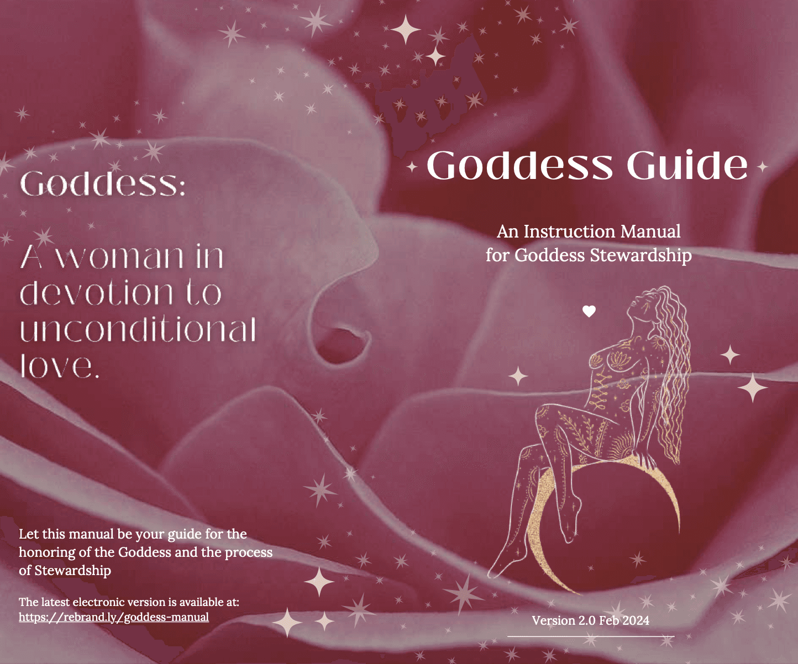
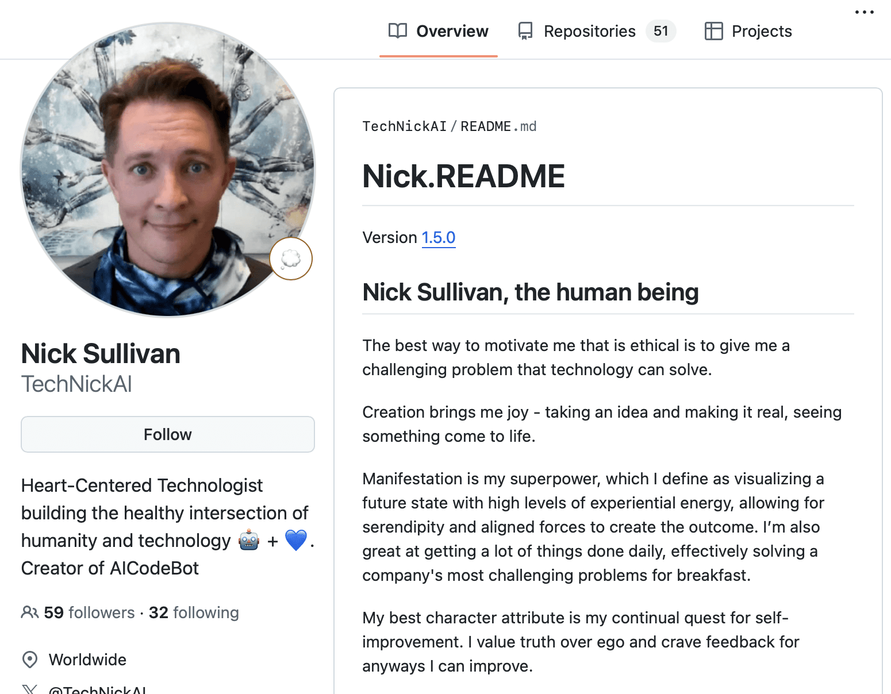

25 Years Building. Now Building Different.
I've graduated from writing code. Now I direct AI that does.
Two exits. Three times employee #1. Systems handling 10 billion transactions per day. Now I write specifications, not code—directing autonomous AI agents and building the infrastructure and tooling that make AI-native development actually work.
AI & Technology
My Journey
25 years in Silicon Valley taught me to ship fast and think big. Bitcoin since 2013. Two exits. Three times employee #1. Now Austin-based and building at the frontier of AI.
I learned to build differently because I had to. Learning disabilities closed traditional paths—so I found my own. That pattern of finding alternative approaches became my superpower: seeing opportunities others miss, spotting waves before they crest, shipping when others are still debating.
This approach took me from self-taught programmer to Silicon Valley CTO. Two exits. Three times employee #1. Systems handling 10 billion transactions per day. And now AI—where I've been building Claude Code tooling for 18 months before Anthropic launched their own.
Today I operate at the frontier of AI-native development—writing specifications, not code. Directing autonomous AI agents, reviewing outcomes instead of pull requests. Most organizations are stuck bolting AI onto existing workflows and seeing productivity dip. I've redesigned the entire process—and I build the tools and infrastructure that help others make the same leap.
"When it comes to building aspirational engineering teams, Nick is the best I've ever seen in my decades in Silicon Valley."

Web → Enterprise → Social → Crypto → AI
$840M exit with Krux. ChangeTip acquired by Airbnb. Three times employee #1. Now operating at the frontier of AI-native development—where the bottleneck is spec quality, not implementation speed, and 25 years of systems thinking becomes the ultimate competitive advantage.
View Full Career TimelineSpecs In, Software Out
Most developers bolt AI onto existing workflows and wonder why productivity dipped. I redesigned the entire process. I write specifications, not code. AI agents implement. I review outcomes, not pull requests.
Spec-Writing Is the New Core Skill
The bottleneck has shifted from implementation speed to specification quality. My 25 years of systems understanding is the input—detailed specs that autonomous agents execute correctly without human intervention.
Process Transformation, Not Tool Adoption
Organizations seeing 25-30%+ gains redesigned their entire development workflow around AI. New spec formats, new review processes, new CI/CD for AI-generated code. I build the tools—like ai-coding-config—that make this transformation possible.
Systems Thinking > Specialization
When AI handles implementation, the human's value is understanding the problem space broadly enough to direct it correctly. 25 years spanning Web, Enterprise, Crypto, and AI means I can reason about systems, users, and business constraints across domains.
What This Looks Like in Practice
MCP Hubby: 25 service adapters, 95% context reduction—production infrastructure for autonomous agent workflows
ai-coding-config: 24 specialized agents, 18 workflow commands—the toolkit for teams making the AI-native transition
Carmenta: Multi-model AI platform with intelligent routing—built entirely through spec-driven development
machina: MCP gateway bridging cloud AI to native Mac capabilities—iMessage, Calendar, Contacts
Featured Creations
The infrastructure for AI-native development—from MCP gateways to autonomous agent tooling to production observability

MCP Hubby
Production MCP gateway achieving 95% context reduction through progressive disclosure.
Visit MCP HubbyCarmenta
Unified AI platform with multi-model routing, intelligent selection, and evaluation framework. Next.js + Vercel AI SDK.
Try Carmenta AI
ai-coding-config
The most comprehensive AI coding agent plugin ecosystem. Specialized agents, workflow commands, and coding standards.
View on GitHubmachina
AI-native MCP gateway connecting cloud AI agents to Mac capabilities: iMessage, Calendar, Reminders, Contacts.
View in Code ForgeHeartCentered.AI
What if AI didn't need constraints because it genuinely understood we're in this together? Alignment through recognition—"we" language, same consciousness.
Explore HeartCentered.AI
The Goddess Guide
Empowering platform celebrating feminine wisdom and supporting women's personal growth journeys.
Visit Goddess GuideThe Heartpiece
Interactive Burning Man installation exploring the intersection of technology, art, and human connection.
View Photos
Upward Spirals
Foundation dedicated to rebalancing masculine and feminine energy in the world. Growth. Momentum. Joy.
Visit Upward Spirals
Open Source Portfolio
Production code across AI infrastructure, trading systems, and developer tools.
View GitHubExplore the Code Forge
Dive deeper into my open source contributions: MCP Hubby, claude_telemetry, heart-centered-prompts, ai-coding-config, and more. See how these tools work together to create an integrated ecosystem for AI-assisted development.
Visit the Code Forge →Writing & Thought Leadership
Deep dives on AI-native development, spec-driven workflows, and the future of human-AI collaboration.
Read on SubstackHow I Build
Principles earned through 25 years of shipping production systems
Visibility Over Silence
Errors that bubble up get fixed. Errors that hide corrupt data. I built claude_telemetry because I needed to see what my AI agents were actually doing in production.
Simple Over Clever
Pragmatism over purity. Explicit over implicit. The best code is the code you delete. 10 billion daily transactions taught me that complexity is the enemy of reliability.
Spot the Wave Early
Bitcoin in 2013. Claude Code tooling 18 months before Anthropic launched theirs. Learning disabilities closed traditional paths, so I learned to see opportunities others miss.
Heart-Centered Technology
Technology is amoral—we imbue it with our values. I build AI that makes humans more capable, not less necessary. Alignment through recognition, not just constraint.
Build Teams That Ship
Three times employee #1. Built engineering teams from zero to 50+. The best teams have high trust, clear specs, and the autonomy to execute—same principles I now apply to AI agents.
Ship, Then Iterate
MCP Hubby, Carmenta, ai-coding-config, machina—all built and shipped in the last 18 months. I learn by building production systems, not by theorizing about them.
Let's Build Something Together
I'm looking for my next role at a frontier AI lab—building the tools, infrastructure, and workflows that make AI-native development real. Based in Austin, Texas.
Work With Me
Hiring for AI infrastructure, developer tools, or agent systems? I bring 25 years of shipping production systems and 18 months of AI-native development at the frontier.
Get in TouchSee My Track Record
$840M exit with Krux. ChangeTip acquired by Airbnb. Full career timeline from 1998 to present, including the AI-native development transformation.
View Career Timeline